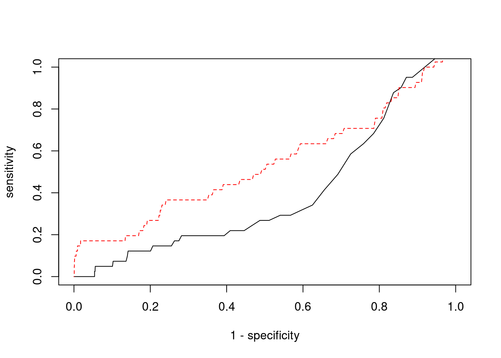

Last updated: 2022-02-22
Checks: 6 1
Knit directory: cTWAS_analysis/
This reproducible R Markdown analysis was created with workflowr (version 1.6.2). The Checks tab describes the reproducibility checks that were applied when the results were created. The Past versions tab lists the development history.
Great! Since the R Markdown file has been committed to the Git repository, you know the exact version of the code that produced these results.
Great job! The global environment was empty. Objects defined in the global environment can affect the analysis in your R Markdown file in unknown ways. For reproduciblity it’s best to always run the code in an empty environment.
The command set.seed(20211220) was run prior to running the code in the R Markdown file. Setting a seed ensures that any results that rely on randomness, e.g. subsampling or permutations, are reproducible.
Great job! Recording the operating system, R version, and package versions is critical for reproducibility.
Nice! There were no cached chunks for this analysis, so you can be confident that you successfully produced the results during this run.
Using absolute paths to the files within your workflowr project makes it difficult for you and others to run your code on a different machine. Change the absolute path(s) below to the suggested relative path(s) to make your code more reproducible.
| absolute | relative |
|---|---|
| /project2/xinhe/shengqian/cTWAS/cTWAS_analysis/data/ | data |
| /project2/xinhe/shengqian/cTWAS/cTWAS_analysis/code/ctwas_config.R | code/ctwas_config.R |
Great! You are using Git for version control. Tracking code development and connecting the code version to the results is critical for reproducibility.
The results in this page were generated with repository version 1058990. See the Past versions tab to see a history of the changes made to the R Markdown and HTML files.
Note that you need to be careful to ensure that all relevant files for the analysis have been committed to Git prior to generating the results (you can use wflow_publish or wflow_git_commit). workflowr only checks the R Markdown file, but you know if there are other scripts or data files that it depends on. Below is the status of the Git repository when the results were generated:
Ignored files:
Ignored: .ipynb_checkpoints/
Untracked files:
Untracked: Rplot.png
Untracked: analysis/.ipynb_checkpoints/
Untracked: analysis/Glucose_Adipose_Subcutaneous.Rmd
Untracked: analysis/Glucose_Adipose_Visceral_Omentum.Rmd
Untracked: analysis/Splicing_Test.Rmd
Untracked: code/.ipynb_checkpoints/
Untracked: code/AF_out/
Untracked: code/BMI_S_out/
Untracked: code/BMI_out/
Untracked: code/Glucose_out/
Untracked: code/LDL_S_out/
Untracked: code/T2D_out/
Untracked: code/ctwas_config.R
Untracked: code/mapping.R
Untracked: code/out/
Untracked: code/run_AF_analysis.sbatch
Untracked: code/run_AF_analysis.sh
Untracked: code/run_AF_ctwas_rss_LDR.R
Untracked: code/run_BMI_analysis.sbatch
Untracked: code/run_BMI_analysis.sh
Untracked: code/run_BMI_analysis_S.sbatch
Untracked: code/run_BMI_analysis_S.sh
Untracked: code/run_BMI_ctwas_rss_LDR.R
Untracked: code/run_BMI_ctwas_rss_LDR_S.R
Untracked: code/run_Glucose_analysis.sbatch
Untracked: code/run_Glucose_analysis.sh
Untracked: code/run_Glucose_ctwas_rss_LDR.R
Untracked: code/run_LDL_analysis_S.sbatch
Untracked: code/run_LDL_analysis_S.sh
Untracked: code/run_LDL_ctwas_rss_LDR_S.R
Untracked: code/run_T2D_analysis.sbatch
Untracked: code/run_T2D_analysis.sh
Untracked: code/run_T2D_ctwas_rss_LDR.R
Untracked: data/.ipynb_checkpoints/
Untracked: data/AF/
Untracked: data/BMI/
Untracked: data/BMI_S/
Untracked: data/Glucose/
Untracked: data/LDL_S/
Untracked: data/T2D/
Untracked: data/TEST/
Untracked: data/UKBB/
Untracked: data/UKBB_SNPs_Info.text
Untracked: data/gene_OMIM.txt
Untracked: data/gene_pip_0.8.txt
Untracked: data/mashr_Heart_Atrial_Appendage.db
Untracked: data/mashr_sqtl/
Untracked: data/summary_known_genes_annotations.xlsx
Untracked: data/untitled.txt
Unstaged changes:
Modified: analysis/BMI_Brain_Cortex.Rmd
Modified: analysis/LDL_Liver_S.Rmd
Modified: analysis/index.Rmd
Note that any generated files, e.g. HTML, png, CSS, etc., are not included in this status report because it is ok for generated content to have uncommitted changes.
These are the previous versions of the repository in which changes were made to the R Markdown (analysis/BMI_Brain_Anterior_cingulate_cortex_BA24_S.Rmd) and HTML (docs/BMI_Brain_Anterior_cingulate_cortex_BA24_S.html) files. If you’ve configured a remote Git repository (see ?wflow_git_remote), click on the hyperlinks in the table below to view the files as they were in that past version.
| File | Version | Author | Date | Message |
|---|---|---|---|---|
| Rmd | 1058990 | sq-96 | 2022-02-22 | update |
#number of imputed weights
nrow(qclist_all)[1] 22309#number of imputed weights by chromosome
table(qclist_all$chr)
1 2 3 4 5 6 7 8 9 10 11 12 13 14 15 16
2098 1509 1302 840 867 1173 1246 802 883 992 1373 1119 433 747 756 1088
17 18 19 20 21 22
1486 305 1596 706 291 697 #number of imputed weights without missing variants
sum(qclist_all$nmiss==0)[1] 20548#proportion of imputed weights without missing variants
mean(qclist_all$nmiss==0)[1] 0.9211#add z scores to results
load(paste0(results_dir, "/", analysis_id, "_expr_z_gene.Rd"))
ctwas_gene_res$z <- z_gene[ctwas_gene_res$intron_id,]$z
z_snp <- z_snp[z_snp$id %in% ctwas_snp_res$id,]
ctwas_snp_res$z <- z_snp$z[match(ctwas_snp_res$id, z_snp$id)]
#merge gene and snp results with added information
ctwas_snp_res$genename=NA
ctwas_snp_res$gene_type=NA
ctwas_snp_res$intron_id=NA
ctwas_res <- rbind(ctwas_gene_res,
ctwas_snp_res[,colnames(ctwas_gene_res)])
#get number of eQTL for geens
num_eqtl <- c()
for (i in 1:22){
load(paste0(results_dir, "/", analysis_id, "_expr_chr", i, ".exprqc.Rd"))
num_eqtl <- c(num_eqtl, unlist(lapply(wgtlist, nrow)))
}
ctwas_gene_res$num_eqtl <- num_eqtl[ctwas_gene_res$intron_id]
#store columns to report
report_cols <- colnames(ctwas_gene_res)[!(colnames(ctwas_gene_res) %in% c("type", "region_tag1", "region_tag2", "cs_index", "gene_type", "z_flag", "id", "chrom", "pos"))]
first_cols <- c("genename", "region_tag")
report_cols <- c(first_cols, report_cols[!(report_cols %in% first_cols)])
report_cols_snps <- c("id", report_cols[-1])
report_cols_snps <- report_cols_snps[!(report_cols_snps %in% "num_eqtl")]
#get number of SNPs from s1 results; adjust for thin argument
ctwas_res_s1 <- data.table::fread(paste0(results_dir, "/", analysis_id, "_ctwas.s1.susieIrss.txt"))
n_snps <- sum(ctwas_res_s1$type=="SNP")/thin
rm(ctwas_res_s1)#estimated group prior
estimated_group_prior <- group_prior_rec[,ncol(group_prior_rec)]
names(estimated_group_prior) <- c("gene", "snp")
estimated_group_prior["snp"] <- estimated_group_prior["snp"]*thin #adjust parameter to account for thin argument
print(estimated_group_prior) gene snp
0.0072097 0.0002839 #estimated group prior variance
estimated_group_prior_var <- group_prior_var_rec[,ncol(group_prior_var_rec)]
names(estimated_group_prior_var) <- c("gene", "snp")
print(estimated_group_prior_var) gene snp
18.65 17.68 #report sample size
print(sample_size)[1] 336107#report group size
group_size <- c(nrow(ctwas_gene_res), n_snps)
print(group_size)[1] 22309 7535010#estimated group PVE
estimated_group_pve <- estimated_group_prior_var*estimated_group_prior*group_size/sample_size #check PVE calculation
names(estimated_group_pve) <- c("gene", "snp")
print(estimated_group_pve) gene snp
0.008923 0.112528 #compare sum(PIP*mu2/sample_size) with above PVE calculation
c(sum(ctwas_gene_res$PVE),sum(ctwas_snp_res$PVE))[1] 0.3274 18.2854 genename region_tag susie_pip mu2 PVE
22029 JAKMIP3 10_83 1.0000 25835.31 7.687e-02
21929 DST 6_42 0.9989 12849.84 3.819e-02
22204 TNFSF12-TNFSF13 17_7 0.9393 28.54 7.977e-05
21961 PMS2P3 7_48 0.9231 93.18 2.559e-04
22013 CASP7 10_71 0.8357 24.71 6.145e-05
4765 EIF2B5 3_113 0.7968 36.44 8.638e-05
4686 SERPINI1 3_103 0.7921 21.90 5.162e-05
9031 SLC25A37 8_24 0.7797 25.59 5.936e-05
3573 ING5 2_144 0.7714 21.80 5.002e-05
12809 NTM 11_82 0.7609 28.08 6.358e-05
5483 SCLT1 4_85 0.7575 5737.07 1.293e-02
5482 SCLT1 4_85 0.7575 5737.07 1.293e-02
22256 HAP1 17_24 0.7214 23.10 4.958e-05
5838 C5orf64 5_37 0.7070 24.31 5.113e-05
22006 DENND1A 9_63 0.7057 29.38 6.169e-05
18113 RPTOR 17_45 0.7048 47.39 9.939e-05
8447 PTCD1 7_61 0.6991 53.92 1.122e-04
780 NASP 1_28 0.6986 26.26 5.458e-05
7658 FLJ44511 7_1 0.6981 22.19 4.609e-05
12516 CHORDC1 11_50 0.6958 25.08 5.192e-05
intron_id z num_eqtl
22029 intron_10_132164735_132166983 -4.434 1
21929 intron_6_56468999_56469883 2.984 1
22204 intron_17_7559702_7560049 -4.210 2
21961 intron_7_75514779_75515718 10.293 2
22013 intron_10_113679349_113697494 4.584 1
4765 intron_3_184278313_184283785 6.053 2
4686 intron_3_167735823_167789111 -4.049 1
9031 intron_8_23529212_23566108 5.008 1
3573 intron_2_241719612_241719976 -4.094 2
12809 intron_11_131582378_131660929 -4.792 2
5483 intron_4_128959777_128970378 2.051 1
5482 intron_4_128959777_128965227 -2.051 1
22256 intron_17_41727144_41727762 4.260 1
5838 intron_5_61704108_61730046 -3.939 1
22006 intron_9_123757822_123769514 4.837 1
18113 intron_17_80730706_80754010 -6.093 1
8447 intron_7_99429806_99433278 7.174 1
780 intron_1_45600457_45602255 5.388 1
7658 intron_7_524280_524854 4.025 1
12516 intron_11_90206810_90210536 4.423 1 genename region_tag susie_pip mu2 PVE
9706 CCDC171 9_13 0.000000 46173 0.000e+00
19184 MAST3 19_14 0.000000 28716 0.000e+00
19183 MAST3 19_14 0.000000 28527 0.000e+00
22185 TMOD3 15_21 0.502129 28474 4.254e-02
22053 BDNF-AS 11_19 0.000000 26676 0.000e+00
22029 JAKMIP3 10_83 1.000000 25835 7.687e-02
12292 MRPL21 11_38 0.249177 24004 1.780e-02
12291 MRPL21 11_38 0.001352 23853 9.595e-05
12294 IGHMBP2 11_38 0.000000 23082 0.000e+00
21883 FAM193A 4_3 0.000000 22784 0.000e+00
22051 BDNF-AS 11_19 0.000000 22105 0.000e+00
22050 BDNF-AS 11_19 0.000000 21988 0.000e+00
22186 TMOD3 15_21 0.000000 20985 0.000e+00
4092 HEMK1 3_36 0.000000 19351 0.000e+00
4091 C3orf18 3_36 0.000000 19347 0.000e+00
21881 FAM193A 4_3 0.000000 18953 0.000e+00
2988 CCNT2 2_80 0.644623 18918 3.628e-02
12293 MRPL21 11_38 0.000000 17846 0.000e+00
15218 ZSCAN29 15_16 0.000000 17150 0.000e+00
15220 ZSCAN29 15_16 0.000000 17107 0.000e+00
intron_id z num_eqtl
9706 intron_9_15888088_15888983 -7.9030 1
19184 intron_19_18147044_18147443 5.4612 2
19183 intron_19_18147017_18147443 -5.4419 2
22185 intron_15_51924578_51931031 -4.5865 1
22053 intron_11_27659228_27676982 -1.2015 1
22029 intron_10_132164735_132166983 -4.4341 1
12292 intron_11_68898012_68900535 4.3717 1
12291 intron_11_68892993_68893403 -4.4523 1
12294 intron_11_68929357_68933299 4.6259 2
21883 intron_4_2708268_2716023 -4.4114 1
22051 intron_11_27640005_27659171 -0.1817 2
22050 intron_11_27640005_27658241 5.8453 1
22186 intron_15_51938260_51947292 -2.4271 2
4092 intron_3_50572208_50577052 -4.7035 1
4091 intron_3_50569574_50570931 4.6818 1
21881 intron_4_2695129_2696363 5.4355 1
2988 intron_2_134942674_134946101 -3.6982 1
12293 intron_11_68898012_68900548 -3.9727 2
15218 intron_15_43366808_43368923 -3.3590 1
15220 intron_15_43369127_43369596 -3.4315 1 genename region_tag susie_pip mu2 PVE
22029 JAKMIP3 10_83 1.00000 25835.31 0.0768663
22185 TMOD3 15_21 0.50213 28473.69 0.0425385
21929 DST 6_42 0.99888 12849.84 0.0381885
2988 CCNT2 2_80 0.64462 18918.06 0.0362831
12292 MRPL21 11_38 0.24918 24003.54 0.0177953
13995 SPG20 13_13 0.50180 10493.10 0.0156661
13994 SPG20 13_13 0.50180 10493.10 0.0156661
5483 SCLT1 4_85 0.75754 5737.07 0.0129306
5482 SCLT1 4_85 0.75754 5737.07 0.0129306
5485 SCLT1 4_85 0.61284 5679.18 0.0103551
18960 ZNF561-AS1 19_9 0.35158 8652.60 0.0090511
5473 MFSD8 4_84 0.37933 6760.78 0.0076303
21928 DST 6_42 0.06431 12843.37 0.0024575
6351 SFXN1 5_105 0.32228 1037.44 0.0009948
15423 BBS4 15_34 0.29877 821.07 0.0007299
16224 TNRC6A 16_21 0.39875 488.50 0.0005795
16225 TNRC6A 16_21 0.39875 488.50 0.0005795
11033 TNKS2 10_59 0.46068 406.11 0.0005566
21961 PMS2P3 7_48 0.92308 93.18 0.0002559
6908 VPS52 6_28 0.46106 126.25 0.0001732
intron_id z num_eqtl
22029 intron_10_132164735_132166983 -4.434 1
22185 intron_15_51924578_51931031 -4.586 1
21929 intron_6_56468999_56469883 2.984 1
2988 intron_2_134942674_134946101 -3.698 1
12292 intron_11_68898012_68900535 4.372 1
13995 intron_13_36335832_36346582 2.819 1
13994 intron_13_36335832_36346240 -2.819 1
5483 intron_4_128959777_128970378 2.051 1
5482 intron_4_128959777_128965227 -2.051 1
5485 intron_4_129039096_129043395 2.284 1
18960 intron_19_9632417_9645074 -2.621 1
5473 intron_4_127957592_127965072 2.508 1
21928 intron_6_56466195_56468982 2.949 1
6351 intron_5_175516663_175521919 3.518 1
15423 intron_15_72686251_72695177 -6.333 1
16224 intron_16_24805151_24805605 -5.878 1
16225 intron_16_24805151_24805674 5.878 1
11033 intron_10_91817229_91819270 2.515 2
21961 intron_7_75514779_75515718 10.293 2
6908 intron_6_33269819_33270199 -1.561 1 genename region_tag susie_pip mu2 PVE
4064 RBM6 3_36 0.0013864 919.71 3.794e-06
4065 RBM6 3_36 0.0011915 919.32 3.259e-06
4068 RBM6 3_36 0.0011541 919.81 3.158e-06
4069 RBM6 3_36 0.0011541 919.81 3.158e-06
2228 DNAJC27-AS1 2_15 0.0000442 187.59 2.467e-08
2229 DNAJC27-AS1 2_15 0.0000442 187.59 2.467e-08
2230 DNAJC27-AS1 2_15 0.0000442 187.59 2.467e-08
22052 BDNF-AS 11_19 0.0000000 2233.50 0.000e+00
6938 C6orf106 6_28 0.0146671 114.88 5.013e-06
16277 SH2B1 16_23 0.1309648 62.96 2.453e-05
16313 DOC2A 16_24 0.0237613 93.13 6.584e-06
16279 SH2B1 16_23 0.1278130 62.85 2.390e-05
16274 ATXN2L 16_23 0.1157434 62.41 2.149e-05
16275 ATXN2L 16_23 0.1141648 62.35 2.118e-05
16308 TAOK2 16_24 0.0229805 92.37 6.316e-06
16273 ATXN2L 16_23 0.0856437 61.05 1.556e-05
16283 SH2B1 16_23 0.0763835 60.48 1.375e-05
1639 SEC16B 1_87 0.0319104 93.11 8.840e-06
16255 NPIPB7 16_23 0.0641576 61.39 1.172e-05
16322 MAPK3 16_24 0.0266509 89.97 7.134e-06
intron_id z num_eqtl
4064 intron_3_49962685_49967470 12.55 1
4065 intron_3_49999513_50048245 -12.54 1
4068 intron_3_50059746_50060801 -12.54 1
4069 intron_3_50059746_50060956 12.54 1
2228 intron_2_24972232_24972626 -11.29 1
2229 intron_2_24972232_24979060 11.29 1
2230 intron_2_24972232_25001415 11.29 1
22052 intron_11_27658462_27659171 -11.02 2
6938 intron_6_34688933_34696446 10.90 1
16277 intron_16_28863754_28866012 -10.76 1
16313 intron_16_30007090_30007173 -10.76 1
16279 intron_16_28865624_28866012 -10.76 1
16274 intron_16_28835399_28835546 10.74 1
16275 intron_16_28835399_28835549 -10.74 1
16308 intron_16_29989805_29990543 10.73 1
16273 intron_16_28826986_28829401 -10.68 1
16283 intron_16_28872758_28873170 10.65 1
1639 intron_1_177932569_177932698 -10.59 1
16255 intron_16_28466902_28477464 10.51 1
16322 intron_16_30114708_30115595 10.48 1[1] 0.01959 genename region_tag susie_pip mu2 PVE
4064 RBM6 3_36 0.0013864 919.71 3.794e-06
4065 RBM6 3_36 0.0011915 919.32 3.259e-06
4068 RBM6 3_36 0.0011541 919.81 3.158e-06
4069 RBM6 3_36 0.0011541 919.81 3.158e-06
2228 DNAJC27-AS1 2_15 0.0000442 187.59 2.467e-08
2229 DNAJC27-AS1 2_15 0.0000442 187.59 2.467e-08
2230 DNAJC27-AS1 2_15 0.0000442 187.59 2.467e-08
22052 BDNF-AS 11_19 0.0000000 2233.50 0.000e+00
6938 C6orf106 6_28 0.0146671 114.88 5.013e-06
16277 SH2B1 16_23 0.1309648 62.96 2.453e-05
16313 DOC2A 16_24 0.0237613 93.13 6.584e-06
16279 SH2B1 16_23 0.1278130 62.85 2.390e-05
16274 ATXN2L 16_23 0.1157434 62.41 2.149e-05
16275 ATXN2L 16_23 0.1141648 62.35 2.118e-05
16308 TAOK2 16_24 0.0229805 92.37 6.316e-06
16273 ATXN2L 16_23 0.0856437 61.05 1.556e-05
16283 SH2B1 16_23 0.0763835 60.48 1.375e-05
1639 SEC16B 1_87 0.0319104 93.11 8.840e-06
16255 NPIPB7 16_23 0.0641576 61.39 1.172e-05
16322 MAPK3 16_24 0.0266509 89.97 7.134e-06
intron_id z num_eqtl
4064 intron_3_49962685_49967470 12.55 1
4065 intron_3_49999513_50048245 -12.54 1
4068 intron_3_50059746_50060801 -12.54 1
4069 intron_3_50059746_50060956 12.54 1
2228 intron_2_24972232_24972626 -11.29 1
2229 intron_2_24972232_24979060 11.29 1
2230 intron_2_24972232_25001415 11.29 1
22052 intron_11_27658462_27659171 -11.02 2
6938 intron_6_34688933_34696446 10.90 1
16277 intron_16_28863754_28866012 -10.76 1
16313 intron_16_30007090_30007173 -10.76 1
16279 intron_16_28865624_28866012 -10.76 1
16274 intron_16_28835399_28835546 10.74 1
16275 intron_16_28835399_28835549 -10.74 1
16308 intron_16_29989805_29990543 10.73 1
16273 intron_16_28826986_28829401 -10.68 1
16283 intron_16_28872758_28873170 10.65 1
1639 intron_1_177932569_177932698 -10.59 1
16255 intron_16_28466902_28477464 10.51 1
16322 intron_16_30114708_30115595 10.48 1#number of genes for gene set enrichment
length(genes)[1] 54Uploading data to Enrichr... Done.
Querying GO_Biological_Process_2021... Done.
Querying GO_Cellular_Component_2021... Done.
Querying GO_Molecular_Function_2021... Done.
Parsing results... Done.
[1] "GO_Biological_Process_2021"[1] Term Overlap Adjusted.P.value Genes
<0 rows> (or 0-length row.names)
[1] "GO_Cellular_Component_2021"[1] Term Overlap Adjusted.P.value Genes
<0 rows> (or 0-length row.names)
[1] "GO_Molecular_Function_2021"[1] Term Overlap Adjusted.P.value Genes
<0 rows> (or 0-length row.names)Warning in disease_enrichment(entities = genes, vocabulary = "HGNC", database =
"CURATED"): Removing duplicates from input list. Description FDR Ratio
34 Progressive cerebellar ataxia 0.02348 1/17
56 Familial encephalopathy with neuroserpin inclusion bodies 0.02348 1/17
61 NEUROPATHY, HEREDITARY SENSORY AND AUTONOMIC, TYPE VI 0.02348 1/17
63 EPIDERMOLYSIS BULLOSA SIMPLEX, AUTOSOMAL RECESSIVE 2 0.02348 1/17
67 CORTICAL DYSPLASIA, COMPLEX, WITH OTHER BRAIN MALFORMATIONS 9 0.02348 1/17
13 Muscle Spasticity 0.05011 1/17
17 Orofaciodigital Syndromes 0.05011 1/17
24 Epidermolysis Bullosa Simplex 0.05011 1/17
27 Lissencephaly 0.05011 1/17
28 Pachygyria 0.05011 1/17
BgRatio
34 1/9703
56 1/9703
61 1/9703
63 1/9703
67 1/9703
13 5/9703
17 6/9703
24 5/9703
27 6/9703
28 5/9703Loading the functional categories...
Loading the ID list...
Loading the reference list...
Performing the enrichment analysis...Warning in oraEnrichment(interestGeneList, referenceGeneList, geneSet, minNum =
minNum, : No significant gene set is identified based on FDR 0.05!NULLWarning: ggrepel: 15 unlabeled data points (too many overlaps). Consider
increasing max.overlaps#number of genes in known annotations
print(length(known_annotations))[1] 41#number of genes in known annotations with imputed expression
print(sum(known_annotations %in% ctwas_gene_res$genename))[1] 19#significance threshold for TWAS
print(sig_thresh)[1] 4.73#number of ctwas genes
length(ctwas_genes)[1] 5#number of TWAS genes
length(twas_genes)[1] 437#show novel genes (ctwas genes with not in TWAS genes)
ctwas_gene_res[ctwas_gene_res$genename %in% novel_genes,report_cols] genename region_tag susie_pip mu2 PVE
21924 DST 6_42 1.180e-04 12823.378 4.500e-06
21925 DST 6_42 0.000e+00 310.862 0.000e+00
21926 DST 6_42 0.000e+00 231.503 0.000e+00
21927 DST 6_42 4.817e-05 12822.035 1.838e-06
21928 DST 6_42 6.431e-02 12843.368 2.457e-03
21929 DST 6_42 9.989e-01 12849.838 3.819e-02
21930 DST 6_42 0.000e+00 408.243 0.000e+00
21931 DST 6_42 0.000e+00 138.964 0.000e+00
22013 CASP7 10_71 8.357e-01 24.712 6.145e-05
22014 CASP7 10_71 1.439e-02 8.373 3.585e-07
22028 JAKMIP3 10_83 0.000e+00 1620.964 0.000e+00
22029 JAKMIP3 10_83 1.000e+00 25835.308 7.687e-02
22203 TNFSF12-TNFSF13 17_7 6.901e-03 6.604 1.356e-07
22204 TNFSF12-TNFSF13 17_7 9.393e-01 28.544 7.977e-05
22205 TNFSF12-TNFSF13 17_7 8.303e-03 9.325 2.304e-07
22206 TNFSF12-TNFSF13 17_7 1.294e-02 10.134 3.902e-07
22207 TNFSF12-TNFSF13 17_7 1.294e-02 10.134 3.902e-07
22208 TNFSF12-TNFSF13 17_7 1.294e-02 10.134 3.902e-07
intron_id z num_eqtl
21924 intron_6_56463156_56463565 2.9051 1
21925 intron_6_56463764_56464685 -0.4804 2
21926 intron_6_56463764_56466078 0.4175 2
21927 intron_6_56464756_56466078 2.8924 1
21928 intron_6_56466195_56468982 2.9490 1
21929 intron_6_56468999_56469883 2.9842 1
21930 intron_6_56598006_56598476 3.7368 1
21931 intron_6_56851604_56900421 1.5511 1
22013 intron_10_113679349_113697494 4.5843 1
22014 intron_10_113725537_113726305 -0.5169 1
22028 intron_10_132138178_132140451 -3.2870 1
22029 intron_10_132164735_132166983 -4.4341 1
22203 intron_17_7559297_7559846 1.6368 2
22204 intron_17_7559702_7560049 -4.2095 2
22205 intron_17_7559893_7560049 1.3318 1
22206 intron_17_7560488_7560724 1.2342 1
22207 intron_17_7560817_7560999 -1.2342 1
22208 intron_17_7560872_7560999 -1.2342 1#sensitivity / recall
print(sensitivity) ctwas TWAS
0.0000 0.1707 #specificity
print(specificity) ctwas TWAS
0.9991 0.9583 #precision / PPV
print(precision) ctwas TWAS
0.00000 0.01602 
sessionInfo()R version 3.6.1 (2019-07-05)
Platform: x86_64-pc-linux-gnu (64-bit)
Running under: Scientific Linux 7.4 (Nitrogen)
Matrix products: default
BLAS/LAPACK: /software/openblas-0.2.19-el7-x86_64/lib/libopenblas_haswellp-r0.2.19.so
locale:
[1] LC_CTYPE=en_US.UTF-8 LC_NUMERIC=C
[3] LC_TIME=en_US.UTF-8 LC_COLLATE=en_US.UTF-8
[5] LC_MONETARY=en_US.UTF-8 LC_MESSAGES=en_US.UTF-8
[7] LC_PAPER=en_US.UTF-8 LC_NAME=C
[9] LC_ADDRESS=C LC_TELEPHONE=C
[11] LC_MEASUREMENT=en_US.UTF-8 LC_IDENTIFICATION=C
attached base packages:
[1] stats4 parallel stats graphics grDevices utils datasets
[8] methods base
other attached packages:
[1] readxl_1.3.1 forcats_0.5.1
[3] stringr_1.4.0 dplyr_1.0.7
[5] purrr_0.3.4 readr_2.1.1
[7] tidyr_1.1.4 tidyverse_1.3.1
[9] tibble_3.1.6 WebGestaltR_0.4.4
[11] disgenet2r_0.99.2 enrichR_3.0
[13] cowplot_1.0.0 ggplot2_3.3.5
[15] EnsDb.Hsapiens.v79_2.99.0 ensembldb_2.8.0
[17] AnnotationFilter_1.8.0 GenomicFeatures_1.36.3
[19] AnnotationDbi_1.46.0 Biobase_2.44.0
[21] GenomicRanges_1.36.1 GenomeInfoDb_1.20.0
[23] IRanges_2.18.1 S4Vectors_0.22.1
[25] BiocGenerics_0.30.0 workflowr_1.6.2
loaded via a namespace (and not attached):
[1] ggbeeswarm_0.6.0 colorspace_2.0-2
[3] rjson_0.2.20 ellipsis_0.3.2
[5] rprojroot_2.0.2 XVector_0.24.0
[7] fs_1.5.2 rstudioapi_0.13
[9] farver_2.1.0 ggrepel_0.9.1
[11] bit64_4.0.5 lubridate_1.8.0
[13] fansi_0.5.0 xml2_1.3.3
[15] codetools_0.2-16 doParallel_1.0.16
[17] cachem_1.0.6 knitr_1.36
[19] jsonlite_1.7.2 apcluster_1.4.8
[21] Cairo_1.5-12.2 Rsamtools_2.0.0
[23] broom_0.7.10 dbplyr_2.1.1
[25] compiler_3.6.1 httr_1.4.2
[27] backports_1.4.1 assertthat_0.2.1
[29] Matrix_1.2-18 fastmap_1.1.0
[31] lazyeval_0.2.2 cli_3.1.0
[33] later_0.8.0 htmltools_0.5.2
[35] prettyunits_1.1.1 tools_3.6.1
[37] igraph_1.2.10 gtable_0.3.0
[39] glue_1.5.1 GenomeInfoDbData_1.2.1
[41] reshape2_1.4.4 doRNG_1.8.2
[43] Rcpp_1.0.7 cellranger_1.1.0
[45] jquerylib_0.1.4 vctrs_0.3.8
[47] Biostrings_2.52.0 svglite_1.2.2
[49] rtracklayer_1.44.4 iterators_1.0.13
[51] xfun_0.29 rvest_1.0.2
[53] lifecycle_1.0.1 rngtools_1.5.2
[55] XML_3.99-0.3 zlibbioc_1.30.0
[57] scales_1.1.1 vroom_1.5.7
[59] hms_1.1.1 promises_1.0.1
[61] ProtGenerics_1.16.0 SummarizedExperiment_1.14.1
[63] yaml_2.2.1 curl_4.3.2
[65] memoise_2.0.1 ggrastr_1.0.1
[67] gdtools_0.1.9 biomaRt_2.40.1
[69] stringi_1.7.6 RSQLite_2.2.8
[71] highr_0.9 foreach_1.5.1
[73] BiocParallel_1.18.0 rlang_0.4.12
[75] pkgconfig_2.0.3 matrixStats_0.57.0
[77] bitops_1.0-7 evaluate_0.14
[79] lattice_0.20-38 GenomicAlignments_1.20.1
[81] labeling_0.4.2 bit_4.0.4
[83] tidyselect_1.1.1 plyr_1.8.6
[85] magrittr_2.0.1 R6_2.5.1
[87] generics_0.1.1 DelayedArray_0.10.0
[89] DBI_1.1.1 haven_2.4.3
[91] pillar_1.6.4 whisker_0.3-2
[93] withr_2.4.3 RCurl_1.98-1.5
[95] modelr_0.1.8 crayon_1.4.2
[97] utf8_1.2.2 tzdb_0.2.0
[99] rmarkdown_2.11 progress_1.2.2
[101] grid_3.6.1 data.table_1.14.2
[103] blob_1.2.2 git2r_0.26.1
[105] reprex_2.0.1 digest_0.6.29
[107] httpuv_1.5.1 munsell_0.5.0
[109] beeswarm_0.2.3 vipor_0.4.5